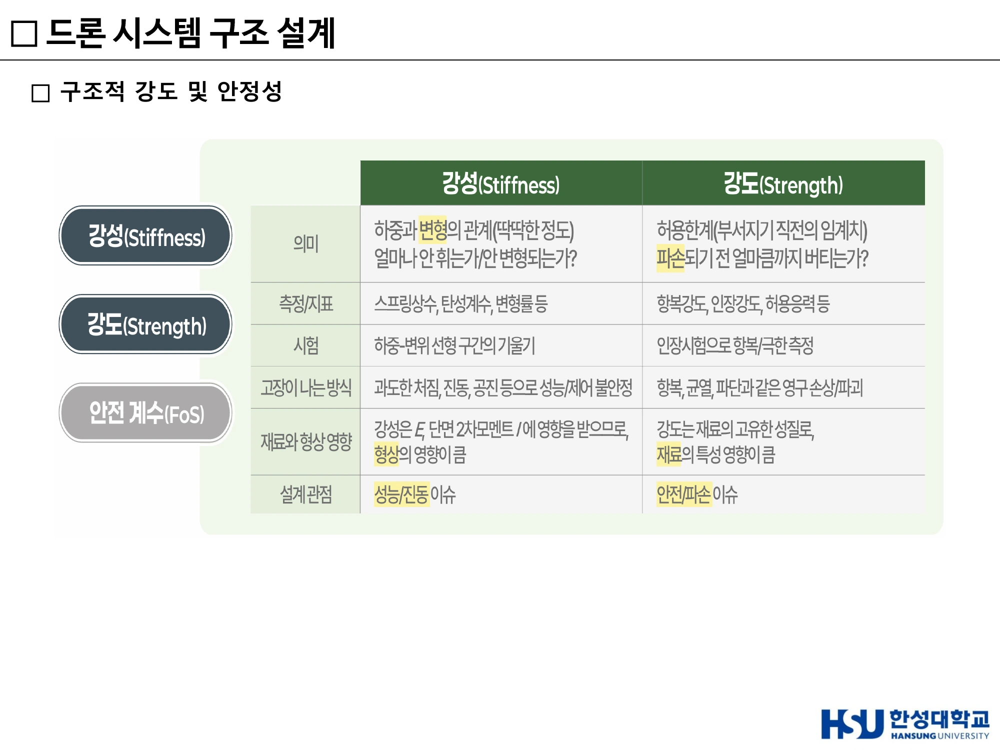
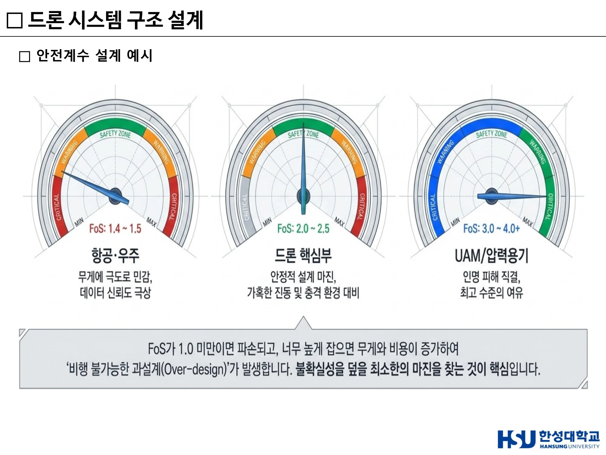
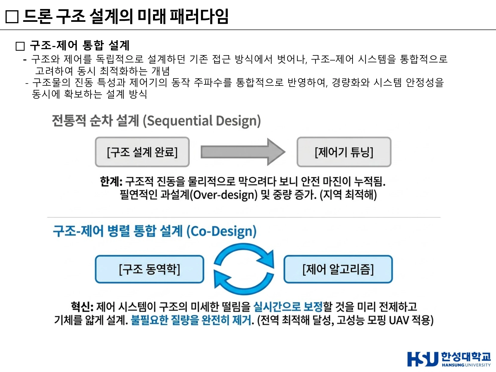
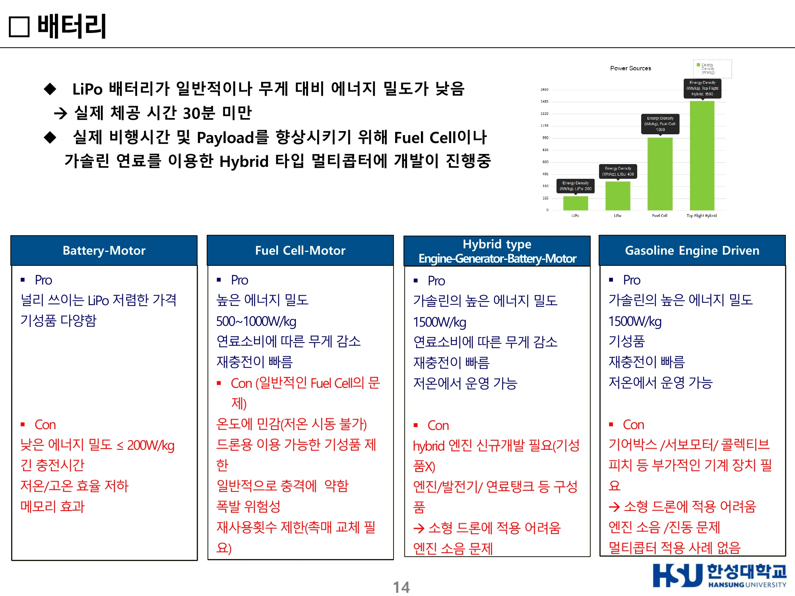
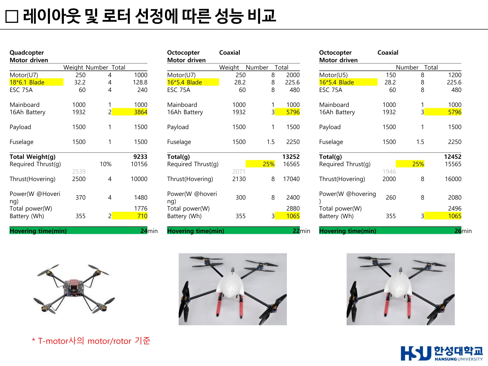
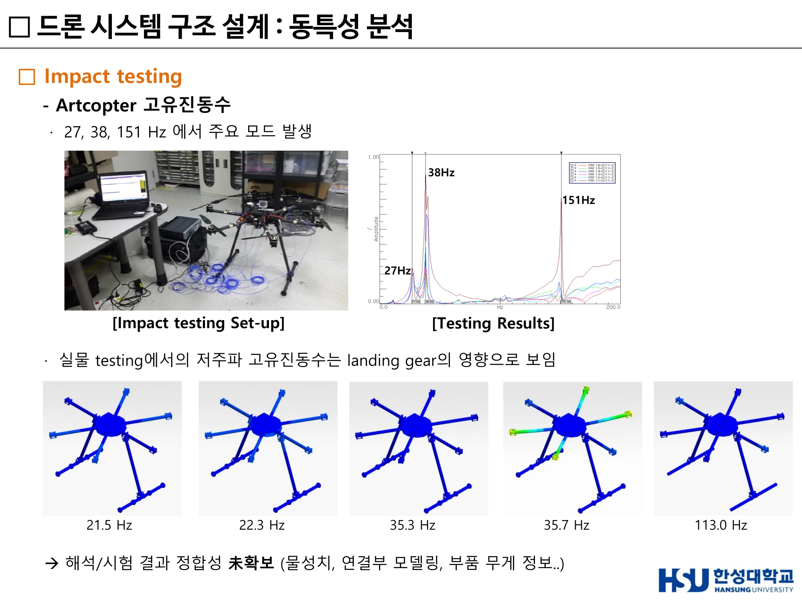

11주차 · 드론 구조설계와 멀티콥터 설계¶
🔗 강의 흐름 — 이 주차는 개론 과목에서 유일하게 정량 설계를 다룬다. 강성·안전계수·동력원·공진 — 네 가지 개념을 숫자로 다룰 수 있어야 한다.
학습목표 — 강성과 강도를 구분하고, 안전계수와 Weight Spiral의 관계를 설명하며, 구조-제어 통합설계와 디지털 트윈의 개념을 서술하고, 프로펠러·모터·배터리 선정과 레이아웃 비교를 정량적으로 수행할 수 있다.
💡 기초 다지기 — "강성이 부족하면 흔들리고, 강도가 부족하면 부러진다." 이 한 문장이 이번 주차의 전부다. 흔들림(진동·공진)은 강성(Stiffness) 문제, 부러짐(파괴)은 강도(Strength) 문제. 둘은 다른 물리량이고, 다른 방법으로 해결한다.
🗺️ 한눈에 보는 개념도¶
flowchart TB
REQ["임무 요구사항<br/>Payload · 체공시간 · 환경"] --> DES
subgraph DES["설계"]
ST["구조 설계<br/>강성 k · 강도 σ · FoS"]
PR["추진 설계<br/>프로펠러 · 모터 · ESC"]
PW["전원 설계<br/>배터리 · 연료전지 · 하이브리드"]
end
DES --> W["중량 증가"]
W -->|Weight Spiral| DES
DES --> VAL["검증<br/>모달해석 · 충격시험 · 디지털트윈"]
VAL --> RES["공진 위험 판정"]1. 개념 이해하기 — 강성 vs 강도¶
| 구분 | 강성 (Stiffness) | 강도 (Strength) |
|---|---|---|
| 정의 | 변형 저항 | 파괴·항복 저항 |
| 수식 | $k = F/\delta$ | 허용응력(항복강도) |
| 관련 현상 | 고유진동수 $\omega_n = \sqrt{k/m}$ → 공진 문제의 핵심 | 부재가 깨지는지의 문제 |
| 부족하면 | 흔들린다 | 부러진다 |
공진은 강성 문제다
공진은 강성–질량 문제다. 강도를 아무리 높여도 공진은 해결되지 않는다. 이 구분을 명확히 쓰지 않으면 감점된다.

▲ 강성(Stiffness)과 강도(Strength)의 의미·측정지표·시험·고장 모드 비교 (출처: 11주차 슬라이드 p6)
2. 안전계수(FoS)와 Weight Spiral¶
안전계수 설계 예시¶
| 적용 분야 | Factor of Safety |
|---|---|
| 드론 핵심부 | 2.0 ~ 2.5 |
| 항공·우주 | 1.4 ~ 1.5 |
$$\text{요구 설계 허용응력} = \text{해석응력} \times \text{FoS}$$
계산 예제 — 요구 설계 허용응력
동일 Arm의 굽힘 응력 해석값이 80 MPa일 때:
- 드론 핵심부 기준 (FoS = 2.0) → 80 MPa × 2.0 = 160 MPa
- 항공·우주 기준 (FoS = 1.4) → 80 MPa × 1.4 = 112 MPa
→ 재료는 핵심부 기준 160 MPa, 항공우주 기준 112 MPa 이상의 항복강도를 가져야 한다. (또는 안전여유 관점: 동일 재료라면 핵심부가 더 큰 단면·중량을 요구한다.)
왜 FoS를 무작정 높일 수 없는가 — Weight Spiral & Over-design¶
FoS ↑ → 요구 허용응력 ↑ → 단면적·두께 증대 → 구조 중량 증가(과설계)
flowchart LR
A["구조 중량 ↑"] --> B["총중량 ↑"]
B --> C["호버 추력 요구 ↑"]
C --> D["더 큰 모터·프로펠러"]
D --> E["더 큰 배터리"]
E --> A중량 추정 반복(Weight Spiral, 악순환) — 구조 중량↑ → 총중량↑, 총중량↑ → 호버 추력 요구↑ → 더 큰 모터·프로펠러 필요 → 모터↑ → 더 큰 배터리 필요 → 또 중량↑ → 다시 1로 되돌아가 중량이 눈덩이처럼 증가하는 발산 루프.
결과: 페이로드 여유·체공시간 급감, 효율 악화.

▲ 안전계수 설계 예시 — 항공·우주 1.4~1.5 / 드론 핵심부 2.0~2.5 / UAM·인력항공기 3.0~4.0 (출처: 11주차 슬라이드 p8)
3. 재료 선택¶
프레임 재질 — 탄소섬유(Carbon Fiber), 알루미늄, 플라스틱 등. 강성·강도·중량·비용의 균형점을 찾는 것이 설계다.
4. 드론 구조 설계의 미래 패러다임¶
경량화와 강성의 물리적 한계를 넘어서기 위해, 드론 구조 설계는 인간의 직관을 넘어 AI 알고리즘과 첨단 나노 소재의 영역으로 진입하고 있음
① AI 기반 형상 설계¶
위상 최적화(Topology Optimization)와 생성형 설계로 사람이 떠올리기 어려운 형상을 도출.
② 구조-제어 통합 설계 (Co-design)¶
- 구조와 제어를 독립적으로 설계하던 기존 방식에서 벗어나, 구조–제어 시스템을 통합적으로 고려하여 동시 최적화하는 개념
- 구조물의 진동 특성과 제어기의 동작 주파수를 통합 반영하여, 경량화와 시스템 안정성을 동시에 확보
사례 — NASA X-56A
- 유연한(flexible) 날개를 사용하기 때문에 구조가 가벼워진 대신 진동이 잘 생길 수 있다
- 구조-제어 통합 설계(Structure–Control Co-design)와 능동 플러터 제어(Active Flutter Suppression)를 적용하여 진동이 커지기 전에 억제
- 센서–액추에이터 기반 능동 제어로 플러터 진동이 증폭되기 전에 실시간 억제
- 플러터 발생 한계를 향상시켜 경량 구조에서도 안정적인 비행 성능 확보
플러터(Flutter)란
공기력(Aerodynamics) + 구조 진동(Structure) + 관성(Inertia)이 상호작용하면서 진동이 점점 커지는 불안정 현상. 발생 시 → 날개 진동 급증 / 구조 피로 및 손상 증가 / 제어 안정성 저하 / 심하면 구조 파손.
③ 차세대 드론 아키텍처¶
④ 디지털 트윈 기반 해석¶
- 실제 드론의 구조 동특성과 비행 상태를 가상 환경에서 실시간으로 재현하는 디지털 모델
- 실시간 센서 데이터 + 물리 기반 해석 모델을 결합하여 하중·진동·구조 응답을 예측
- 예시 — 비행 중 구조 상태 모니터링 및 잔여 수명(RUL, Remaining Useful Life) 예측 / Virtual Flight Test 기반 반복 시험으로 개발 효율성 향상 및 비용 절감
설계 도구의 역사: "In the late 20th Century, this was engineering. Paper was King!" → "Then… Someone introduced Computer Aided Drafting… CAD was born." → 지금은 디지털 트윈.

▲ 전통적 순차설계(Sequential Design) vs 구조–제어 병렬 통합설계(Co-Design) (출처: 11주차 슬라이드 p13)
5. 프로펠러¶
선정 시 고려사항
| 파라미터 | 영향 |
|---|---|
| 직경(Diameter) ↑ | 추력 증가 |
| 피치(Pitch) ↑ | 속도 증가 |
| 블레이드 수 ↑ | 추력 증가, 효율 감소 가능 |
| 재질 | 플라스틱 / 카본파이버 |
설계 파라미터 — Tip to Tip Diameter, Propeller Pitch, 에어포일 형상, Chord Length, Twist angle
사례 — T-motor 18 × 6.1 Blade(직경 18인치, 피치 6.1인치). 현재 로봇 기술 그룹 DARPA용 Prototype 적용. 개발 target 사이즈 1m × 1m 이내 가능한 최대 로터 직경.
블레이드 성능 해석·제작·시험
- CFX 이용 초기 검증 완료(헬리콥터 로터 UH-1H 대상), Benchmark 로터 성능 해석, 비행 미션 고려 로터 최적 설계
- 3D Printing을 이용한 Blade Prototype 제작 — Project 3500HD, 정밀도 16~32μm, Printing size 298 × 185 × 203 mm, 제작시간 24시간 예상
- 블레이드 추력 성능 시험 — Single rotor / Coaxial Rotor, 추력 시험용 테스트 리그 제작, Arduino 기반 측정장치, 계측값: 전류, 전압, RPM, 추력
6. 전기 모터의 종류와 특징¶
| 종류 | 특징 |
|---|---|
| Brushed DC Motor | 구조 단순·저가, 브러시 마모로 수명·유지보수 부담 |
| BLDC (Brushless DC) Motor | 브러시 없음 → 수명·효율 우수. 드론 표준 |
| Synchronous Motor (동기 모터) | 회전자가 회전자계와 동기 회전 |
| Induction Motor (유도 모터) | 견고·저가, 슬립 존재 |
성능 파라미터 — KV, 최대 전류, 효율(g/W), 무게 등
추진계 구성
| 구성 | 역할 |
|---|---|
| 프레임(Frame) | 드론의 기본 골격. 모터·배터리·센서·제어장치를 지지 |
| 추진계(Propulsion System) | 프로펠러 + 모터. 회전력으로 양력(Thrust) 발생. 드론 성능(속도·비행시간·적재하중)에 직접 영향 |
| 전원(Power System) | 일반적으로 Li-Po 배터리. 전압(V)·용량(mAh)에 따라 비행시간 결정. 예: 4S(14.8V), 6S(22.2V) |
| 제어계(Control System) | FC(Flight Controller) — IMU·GPS·센서 정보로 자세·비행 제어 / ESC(Electronic Speed Controller) — FC 신호를 받아 모터 속도 제어 |
7. 배터리 — 동력원 4방식 비교¶
30분 이상 체공을 위한 동력원 선택
| 방식 | 에너지 밀도 | Pro | Con |
|---|---|---|---|
| Battery-Motor (LiPo) | ≤ 200 Wh/kg | 널리 쓰이는 LiPo, 저렴한 가격, 기성품 다양 | 낮은 에너지 밀도, 긴 충전시간, 저온/고온 효율 저하, 메모리 효과 |
| Fuel Cell-Motor | 500~1000 W/kg | 높은 에너지 밀도, 연료소비에 따른 무게 감소, 재충전이 빠름 | 온도에 민감(저온 시동 불가), 드론용 기성품 제한, 충격에 약함, 폭발 위험성, 재사용 횟수 제한(촉매 교체) |
| Hybrid (Engine-Generator-Battery-Motor) | 가솔린 1500 W/kg | 높은 에너지 밀도, 연료소비에 따른 무게 감소, 재충전 빠름, 저온에서 운영 가능 | 하이브리드 엔진 신규개발 필요(기성품 X), 엔진/발전기/연료탱크 등 구성품, 소형 드론 적용 어려움, 엔진 소음 |
| Gasoline Engine Driven | 가솔린 1500 W/kg | 높은 에너지 밀도, 기성품 존재, 재충전 빠름, 저온 운영 가능 | 기어박스/서보모터/콜렉티브 피치 등 부가 기계장치 필요, 소형 드론 적용 어려움, 엔진 소음·진동, 멀티콥터 적용 사례 없음 |
LiPo 배터리가 일반적이나 무게 대비 에너지 밀도가 낮아 실제 체공 시간 30분 미만. 실제 비행시간 및 Payload 향상을 위해 Fuel Cell이나 가솔린 연료를 이용한 Hybrid 타입 멀티콥터 개발이 진행 중.
상용 배터리 사양 검토 — LiPo battery (12V ~ 22.2V)
대부분의 상용 배터리 에너지 밀도는 200 Wh/kg 이하.
| 항목 | Tattu 16000mAh 22.2V 15/30C 6S1P |
|---|---|
| Capacity | 16000mAh (355Wh) |
| Weight | 1932g → 184 Wh/kg |
| Dimensions | 180 × 74 × 65 mm |
| Voltage | 22.2V |
| 비고 | 현재 DARPA용 시제품에 적용, 에너지 밀도 비교적 높음 |
동력원 선정 예시
목표: 30분 이상 + Payload 1.5kg급 소형 드론 선정: Hybrid (LiPo + Fuel Cell) — 단, 규모 제약 시 고에너지 LiPo 우선 검토. 근거: 소형·고응답이 요구되는 멀티콥터 특성상 순수 Fuel Cell은 부적합하고, 에너지밀도는 Fuel Cell, 출력밀도는 LiPo가 분담하는 Hybrid 구성이 30분 이상 체공과 비행 안정성을 동시에 만족하는 가장 타당한 해법이다.

▲ Battery-Motor(LiPo) / Fuel Cell-Motor / Hybrid / Gasoline Engine Driven 4방식의 장단점 (출처: 11주차 슬라이드(덱 18) p14)
8. 모터-로터 성능 비교¶
15~18인치 로터/모터 비교 분석 — Motor(blade) supplier: Tiger motor, Tarrot, Rctimer, DJI. 대체로 Efficiency(W/kg) 기준 10% 이내 차이.
| 로터 크기 | Thrust 2kg | Thrust 3kg |
|---|---|---|
| 15~18인치 | 250 W | 500 W |
| 26~28인치 | 150 W | 250 W |
→ 로터가 클수록 같은 추력을 더 적은 전력으로 낸다. 이것이 다음 절의 핵심 원리다.
9. 레이아웃 및 로터 선정에 따른 성능 비교¶
T-motor사의 motor/rotor 기준, Payload 1.5kg
| 항목 | Quadcopter | Octocopter (Coaxial, U7) | Octocopter (Coaxial, U5) |
|---|---|---|---|
| Motor | U7 250g × 4 = 1000 | U7 250g × 8 = 2000 | U5 150g × 8 = 1200 |
| Blade | 18×6.1, 32.2g × 4 = 128.8 | 16×5.4, 28.2g × 8 = 225.6 | 16×5.4, 28.2g × 8 = 225.6 |
| ESC 75A | 60g × 4 = 240 | 60g × 8 = 480 | 60g × 8 = 480 |
| Mainboard | 1000 | 1000 | 1000 |
| 16Ah Battery | 1932g × 2 = 3864 | 1932g × 3 = 5796 | 1932g × 3 = 5796 |
| Payload | 1500 | 1500 | 1500 |
| Fuselage | 1500 | 1500 × 1.5 = 2250 | 1500 × 1.5 = 2250 |
| Total Weight (g) | 9,233 | 13,252 | 12,452 |
| Required Thrust (마진) | 10,156 (10%) | 16,565 (25%) | 15,565 (25%) |
| Thrust (Hovering) | 2500 × 4 = 10,000 | 2130 × 8 = 17,040 | 2000 × 8 = 16,000 |
| Power @Hovering | 370W × 4 = 1,480 | 300W × 8 = 2,400 | 260W × 8 = 2,080 |
| Total power (W) | 1,776 | 2,880 | 2,496 |
| Battery (Wh) | 355 × 2 = 710 | 355 × 3 = 1,065 | 355 × 3 = 1,065 |
| Hovering time | 24 min | 22 min | 26 min |
왜 더 무거운 옥토콥터가 더 오래 나는가
핵심: 모터당 부하가 낮을수록 로터 효율(g/W)이 높아지기 때문.
① 부하 분산 (모터당 부하) 호버링에 필요한 총추력 = 총중량(불변, 추력 = 중량 평형). - 쿼드: 4개 로터가 총추력 분담 → 모터당 부하 큼 - 옥토: 8개 로터가 분담 → 총중량이 다소 무거워도 모터당 부하는 현저히 감소 - 예: 쿼드 총중량 W₄, 모터당 W₄/4 = 0.25 W₄. 옥토 총중량 1.2W₄라도 모터당 1.2W₄/8 = 0.15 W₄ < 0.25 W₄ → 모터당 부하 약 40% 감소
② 로터 효율 곡선(g/W)의 비선형성 로터 효율(단위 전력당 추력)은 저추력 영역에서 높고 고추력 영역에서 급격히 떨어지는 비선형 곡선. 운동량 이론상 $P \propto T^{3/2}$, 즉 $T \propto P^{2/3}$ → 추력을 절반으로 내리면 전력은 $2^{1.5} \approx 2.83$배 절감. 즉 모터당 부하를 낮추면 각 로터가 효율 좋은(g/W 높은) 동작점으로 이동한다.
③ T/W 마진과 전력 소모 옥토는 동일 모터로 더 큰 T/W 여유 확보 → 호버 추력이 최대추력 대비 낮은 비율(예: 30~40%)에서 작동.

▲ Quadcopter 24분 · Coaxial Octocopter(U7) 22분 · Coaxial Octocopter(U5) 26분 — 중량·추력·전력·호버링 시간 원본 표 (출처: 11주차 슬라이드(덱 18) p17)
10. 동특성 분석 (Modal Analysis) — 공진¶
UAV 주요 동특성 모드¶
비행 안정성과 vision에 영향을 주는 주요 모드:
| 모드 | 영향 |
|---|---|
| Z축 병진 mode | 상승/하강 후 leveling control issue |
| 좌우 pitching unbalance mode | Hovering instability, 좌/우 prop의 tilting → Yaw instability |
| Pitching mode | Incoming wind gust → Pitch instability |
| Rolling mode | Lateral wind gust → Roll instability |
기본 설계안 (Type 04) — 고유진동수/고유 모드¶
기본 보강재(ribs) 추가 → 상세설계 시 cut-out 실시. Skin thickness / Ribs thickness 조정. 중량 예: 기존 456g → 514g (58g ↑), 다른 설계안 1377g.
Impact Testing — Artcopter 고유진동수¶
- 27, 38, 151 Hz에서 주요 모드 발생
- 실물 testing에서의 저주파 고유진동수는 landing gear의 영향으로 보임
- 해석/시험 결과 정합성 미확보 (물성치, 연결부 모델링, 부품 무게 정보 부족)
- Testing Results 참고값: 21.5 / 22.3 / 35.3 / 35.7 / 113.0 Hz
계산 예제 — 공진 위험 정량 분석
조건: 쿼드콥터 충격시험 결과 주요 고유진동수가 27 Hz, 38 Hz, 151 Hz에서 측정. 18×6.1 프로펠러 장착, 호버링 시 약 6,000 RPM 회전. 프로펠러 통과주파수(BPF)를 계산하고(블레이드 2매 가정) 공진 위험을 정량 분석하시오.
① 회전 주파수 = 6,000 RPM ÷ 60 = 100 Hz ② BPF = 회전주파수 × 블레이드 수 = 100 Hz × 2 = 200 Hz
③ 판정 - 27 Hz, 38 Hz — 1× 가진(100 Hz)과도 충분히 이격되어 안전 - 151 Hz가 핵심 쟁점 — BPF(200 Hz)와의 이격이 약 24.5%로 ±20% 경계를 약간 벗어나므로 정상 호버링(6,000 RPM)에서는 직접 공진은 아니다 - 그러나 RPM은 기동 시 변동한다. 151 Hz에 BPF가 일치하려면 회전주파수 75.5 Hz → 4,530 RPM. 즉 호버링 RPM(6,000)보다 낮은 운용 영역(상승/하강·저추력 구간)에서 BPF가 151 Hz를 통과(sweep through)하게 되어 천이 공진(transient resonance) 위험이 존재한다 - 또한 151 Hz는 1× 성분 기준으로는 9,060 RPM에 해당하므로 정격 범위 밖이나, BPF 경유 통과는 피할 수 없어 151 Hz 모드가 가장 위험한 모드로 판정된다
이어지는 서술 — 순차설계 vs 코디자인
공진은 강성–질량 문제($\omega_n = \sqrt{k/m}$).
| 접근 | 강성 확보 전략 | 중량 영향 |
|---|---|---|
| 순차설계 (Sequential Design) | 강성을 구조로만 확보 | 무겁다 |
| 코디자인 (Co-Design) | 구조와 제어가 강성을 분담 | 더 가볍게 같은 안전성 달성 |
강성(Stiffness) — 변형 저항($k = F/\delta$), 고유진동수를 결정 → 공진 문제의 핵심 강도(Strength) — 파괴·항복 저항(허용응력), 부재가 깨지는지의 문제

▲ Impact testing — Artcopter 고유진동수 27 · 38 · 151 Hz와 실측 모드 형상 (출처: 11주차 슬라이드(덱 18) p20)
🤔 생각해 봅시다¶
- 헥사콥터와 옥토콥터 중 택배 드론에 적합한 것은 무엇인가? 9주차의 "옥토콥터는 체공시간이 줄어든다"와 이번 주 계산표(옥토콥터가 더 오래 체공한다)는 모순처럼 보인다. 두 진술을 어떻게 양립시킬 수 있는가? (힌트: 같은 배터리 조건 대 같은 페이로드 조건, 동축 반전 여부)
- 안전계수를 2.5로 잡은 설계와 1.4로 잡은 설계 중, 사람이 타지 않는 드론에는 어느 쪽이 합리적인가? 판단 기준을 제시하시오.
- 디지털 트윈으로 Virtual Flight Test를 수행하면 실물 시험을 얼마나 줄일 수 있는가? 줄일 수 없는 시험은 무엇인가?
✅ 이번 주 체크리스트¶
- 강성과 강도를 수식과 함께 구분해 설명할 수 있다
- FoS 계산(해석응력 × FoS)을 할 수 있고, 드론 2.0~2.5 / 항공우주 1.4~1.5를 안다
- Weight Spiral 루프를 그릴 수 있다
- 플러터의 3요소(공기력+구조진동+관성)를 안다
- 동력원 4방식의 에너지 밀도 수치를 안다 (LiPo ≤200 / FC 500~1000 / 가솔린 1500)
- BPF = 회전주파수 × 블레이드 수를 계산할 수 있다
- $P \propto T^{3/2}$로 옥토콥터 체공시간 역전을 설명할 수 있다
▶️ 다음 주 예고 — 하늘길이 도시로 내려온다. 스마트시티, MaaS, 그리고 UAM. 그리고 파트 3의 문을 여는 로봇 산업. → 12주차